HORT 281 :: Lecture 15 :: ORIGIN, AREA, PRODUCTION, VARIETIES, PACKAGE OF PRACTICES FOR ONION

origin, area, production, varieties, package of practices for onion
Allium cepa L. (2n = 2 x = 16)
(Hindi: Pyaz)
Onion is valued for its bulbs having characteristic odour, flavour and pungency, which is due to the presence of a volatile oil – allyl-propyl-disulphide. Pungency is formed by enzymatic reaction when tissues are broken. Bulbs are suited for storage for a long period and for long distance transport. It is used as salad and cooked in many ways in curries, fried, boiled, baked and used in making soups, pickles etc. Value addition in onion is done by marketing dehydrated onions and onion flakes. Onion bulb is rich in minerals like phosphorus (50 mg / 100 g) and calcium (180 mg / 100 g). Many medicinal uses are reported for bulbs and is commonly used as diuretic and applied on wounds and boils. Onion greens are also used by harvesting crop at pencil thickness and when small bulb is formed.
India is the second largest producer of onion in the world, next to China and ranks third in export of onions, next to Netherlands and Spain. During 2001-2002, a total of 52.52 lakh metric tones of bulbs was produced from an area of 4.96 lakh hectares in India. Maharashtra is the leading onion producing state in India followed by Karnataka and Gujarat. The crop is grown on extensive scale in Orissa, Andhra Pradesh, Uttar Pradesh, Tamil Nadu, Rajasthan and Bihar.
Origin and taxonomy
Onion originated in Asia. According to Vavilov (1951), onion originated in Pakistan. Jones and Mann (1963) proposed the area comprising Pakistan, Iran and mountain areas to the North as primary centre of origin of onion.
The following types of onions are grown in India:
- Common onion (Allium cepa var. cepa) – with large bulbs born singly and propagated through seeds. It is mainly used as salad or in curries.
Multiplier onion or potato onion (Allium cepa var. aggregatum) – producing small bulbs borne in clusters and generally propagated through small bulbs. Mainly used for seasoning curries.
| 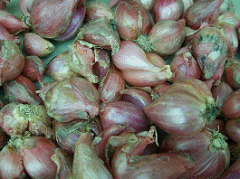 | 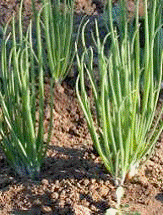 |
2.Shallot (Allium cepa var. ascalonicum) – Produces bulbs in clusters on surface of soil. This perennial onion rarely produces seeds and is propagated through bulbs.
| 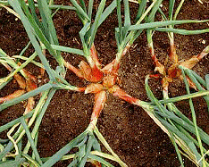 | 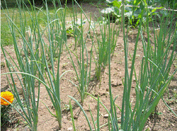 |
- Tree onion or Egyptian onion (Allium cepa var. viviparaum / proliferum) – This viviparous plant produces a perennial underground bulb and is not widely cultivated. The bulb-lets produced in place of umbel are used for pickling and seasoning. Bulb-lets are also used for propagation.
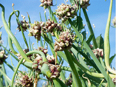 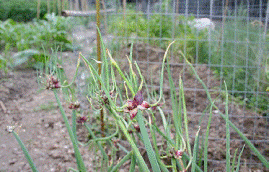 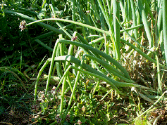 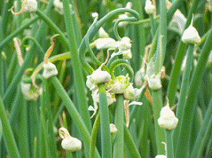
Capsules Walking onions
| 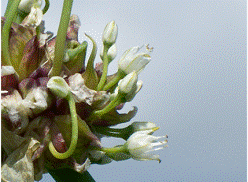 | 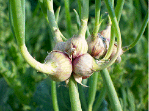 |
Walking onion flowers Onion sets growing green stalks of their own
- Chive (A. schoenoprasum) (2n=16, 24, 32). This is a hardy perennial bunching herb grown for their hollow green leaves. It is propagated by root division and is tolerant to extreme cold and drought.
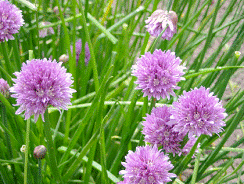 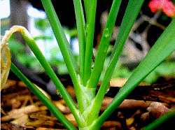
In addition, a perennial bunching species, A. fistulosum is very common in China and Japan and is grown for its edible tops and leaf bases.
| 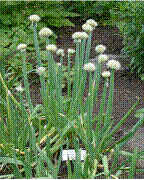 | 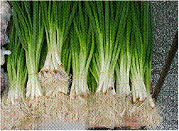 |
Botany
Onion is a biennial herb with a characteristic smell. The leaves are tubular and the bulbs are formed by the attachment of swollen leaf bases to underground part of stem which is small and rudimentary. Flowers are produced during second phase after formation of bulbs. Flowering structure is called an ‘umbel’, which is an aggregate of many small inflorescences (cymes) of 5-10 flowers. Length of peduncle commonly known a ‘scape’ varies with variety. Though individual flowers are hermaphrodite, they are cross pollinated due to protandry. Cross pollination is achieved by honey bees when they visit flowers for nectar. Stigma becomes receptive 3-4 days after shedding of pollen grains. Artificial selfing is done by covering all umbels of a plant together and by shaking or rubbing each other or by introducing flies.
Male sterility
Jones and Clarke (1943) reported male sterility formed by interaction of nuclear gene and cytoplasmic factor. It is presumed that there are two types of cytoplasm – normal (N) and sterile (S). All male sterile plants have ‘S’ cytoplasm which is inherited maternally through egg. A recessive gene ‘ms’ in homozygous condition results in sterile pollen grains when carried in plants with ‘S’ cytoplasm [S(msms)]. Plants with ‘N’ cytoplasm [N(MsMs)], N(MsMs), N(msms) and plants with genetic constitution S (MsMs) and S (Msms) are fertile. Besides modifier genes, environmental factors also cause variation in expression of male sterility.
constitution of N (Msms) as pollen parent. Progeny segregates in the ratio of 1 male sterile: 1 male fertile. ‘C line’ is generally designated as fertility restorer line.
Climate
Onion is a cool season vegetable and grows well under mild climate without extreme heat or cold or excessive rainfall. It does not thrive when the average rainfall exceeds 75-100 cm during monsoon period. The young seedlings withstand freezing temperature. The ideal temperature for vegetative growth is 12.8 – 23.0oC. For bulb formation it requires long days and still higher temperature (20-25oC). Even though onion is treated as a long day plant, for bulb formation and its development, varieties differ in their response to length of day. Most of cultivars grown in plains of North India are short day cultivars. Long day varieties will not produce bulbs under short day conditions and short day cultivars if planted under long day conditions will develop early bulbs. For seed production, temperature has more relevance than photoperiod.
Varieties
Onion varieties differ in size, colour of skin, pungency, and maturation etc. of bulbs. Large sized bulbs are mild in pungency and are sweet in taste compared to small sized onions. Red coloured cultivars are more pungent than silver skinned varieties and keep better in storage. Yellow cultivars have less demand in the market. The local cultivars are known and marketed after the names of places where they are grown. Poona Red, Nasik Red, Bellary Red, Patna Red and Patna White are common in onion trade.
Most of the improved varieties were developed through mass selection from local collections of segregating populations. A brief description of improved varieties is given below:
Developing institution |
Variety |
Special features |
IIHR, Bangalore |
Arka Niketan (Sel-13)* |
Bulbs globular and pink with a weight of 100-180g, thin neck, highly pungent, TSS 12-13%, good storage quality. Yield 42 t/ha in 145 days. |
|
Arka Kalyan (Sel-14)* |
Bulbs globular and pink with a weight of 130-190 g, TSS 11-13%, good storage quality. Suitable for kharif season only. Moderately resistant to purple blotch. Yield 47 t/ha in 140 days. |
|
Arka Bindu (Rose onion) |
Bulbs small, crimson red colour with 12.5% TSS. Yield 25 t/ha in 90-95 days. |
|
Arka Pragathi |
Bulbs globular with thin neck and deep pink with high pungency. Early variety with good storage quality. Yield 45 t/ha in 130 days. |
IARI, New Delhi |
Pusa Red* |
Bulbs red, globular, 5-6 cm in diameter and 70-90 g in weight, less pungent, good keeping quality, TSS 12-13%, yield 25-30 t/ha in 125-140 days. |
|
Pusa Ratnar* |
Bulbs bronze deep rd, flat globular, less pungent and good keeping quality, yield 32.5-35 t/ha in 145-150 days. |
|
Pusa White Round |
Bulbs medium to large, attractive round, good keeping quality, suitable for dehydration, yield 32.5 t/ha in 125-140 days. |
|
Pusa Madhvi |
Bulbs light red, good keeping quality, yield 30-40 t/ha. |
|
Pusa White Flat |
Good for dehydration and green onion, yield 33-35 t/ha. |
|
Early Grano |
Introduction from USA with large globular yellow coloured bulbs having mild pungency, suitable for salad purpose and for green onion purpose, poor keeping quality, yield 50-60 t/ha in 95 days. |
IARI Regional Station, Katrain |
Brown Spanish |
Long day type suitable for hills, yield 28 t/ha in 160-180 days. |
NHRDF, Nasik |
Agrifound Dark Red* |
Bulbs dark red, globular 4-6 cm in diameter, moderately pungent, TSS 13%, good keeping quality, yield 30-40 t/ha in 160-165 days. |
|
Agrifound Rose |
Suitable for export bulbs dark red, yield 19-20 t/ha. |
VPKS, Almora, UP. |
VL 3 |
Bulbs medium size, globular, red and pungent. Yield 25 t/ha in 145 days. |
MPKV, Rahuri |
N-2-4-1* |
Bulbs brick red, globular, 6.1 cm in diameter, pungent and firm with good keeping quality, TSS 12-13%, yield 30 t/ha in 140 days. |
|
N-257-9-1* |
Bulbs globular and white, suitable for rabi season, suitable for dehydration. Yield 25 t/ha in 125 days. |
|
Baswant-780 |
Bulbs crimson red with 12% TSS. Yield 25 t/ha in 125 days. |
|
N-53 (Nishad-53) |
Suitable for kharif season. Bulbs shining red, less pungent, globular, yield 15-20 t/ha. |
HAU, Hisar |
Hisar-2 |
Bulbs light red, yield 20 t/ha. |
Punjab Agricultural University, Ludhiana. |
Punjab Naroya* |
Bulbs red, medium to large, round with thin neck, tolerant to purple blotch, yield 37.5 t/ha. In 123 days. |
|
Punjab |
Bulbs red, globular, 5-6 cm in diameter and 50-70 g in weight, good keeping quality, yield 30 t/ha. |
|
Punjab Red Round* |
Bulbs shining red, globular, medium size with thin neck, yield 28-30 t/ha. |
|
S-148* |
Bulbs white, flat round, average weight 80 g, TSS 12-13%, good storage quality, yield 25-30 t/ha in 140 days. |
CSAU&T, Kanpur. |
Kalyanpur Red Round |
Bulbs light red, yield 20 t/ha. |
RAU, Rajashthan |
Udaipur 102 |
Bulbs white suitable for dehydration, yield 25-30 t/ha. |
Hybrid vigour
IIHR, Bangalore has developed F1 hybrids like Arka Kirtiman, Arka Lalima and Arka Pitamber. A brief description of the above hybrids is given below :
Arka Kirtiman - F1 hybrid of CMS 65 x Selection 13-1-1. Suitable for kharif and rabi seasons, bulbs medium size and dark red, yield 45-60 t/ha, good keeping quality, suitable for export to Gulf countries.
Arka Lalima – F1 hybrid of MS 48 x Selection 14-1-1, bulbs globe shaped an deep red each weighing 120-130 g, good shelf life of 5 months, tolerant to purple blotch, suitable for export to Gulf countries.
Arka Pitamber (IIHR Yellow) – Short day variety with globe shaped yellow bulbs, average bulb weight 80 g, moderately resistant to purple blotch, yield 35-38 t/ha.
Soil
Onion prefers a well drained, loose and friable soil rich in humus. It is sensitive to high acidity and alkalinity and the ideal pH is 5.8 to 6.5.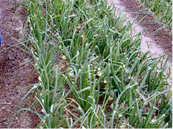
Methods of planting
The following three methods of planting are followed depending on soil, topography, climatic conditions and economic aspects:
- Raising seedlings and transplanting
- Planting bulbs directly in the field.
- Broadcasting or drilling of seeds directly in the field.
Transplanting method
This is the most common method practiced for irrigated crop as it results in high yield and large size bulbs. In plains, seeds are sown during October-November for a Rabi crop. In hills, seeds are sown from March to June. Seeds are first sown in well prepared nursery beds of 90-120 cm width, 7.5-10.0 cm height and convenient length. Raito between nursery area and main field is about 1:20. Seed rate varies from 8 to 10 kg/ha. Seedlings of 15 cm height and 0.8 cm neck diameter are ideal for transplanting and this is achieved in 8 weeks. However, it varies from 6-10 weeks depending on soil, climate and receipt of rain. There is a practice of topping seedlings at the time of transplanting if seedlings are over-grown.
For transplanting, the land is brought to a fine tilth by thorough ploughing, leveling and breaking clods. The field is then divided into small plots of convenient sizes for irrigation and seedlings are transplanted at 15 x 8-10 cm spacing.
Planting of bulbs
This method is practiced in hill slope and in terrace cultivation since seedlings are easily washed off in rain. Medium to small sized bulbs alone are used for plating since large sized bulbs result in early bolting and high cost. Medium sized bulbs obtained from a seedling planted June crop are used for planting in September – October after giving a month rest. Bulbs are dibbled at 15 cm apart on the side of 45 cm wide ridges or in beds or in furrows depending on soil or climate. 10-12 quintals of bulbs are required to plant one hectare.
Broadcasting or drilling method
Direct sowing by broadcasting or drilling at 30 cm apart is practiced in some areas to save labour for transplanting. Here seed requirement is as high as 25 kg / ha. Care should be taken to remove weeds during initial stages to prevent smothering of seedlings by weeds. Usually weeding is done at 10 days interval for the first 1-2 months. When bulbs are 6-8 weeks old, seedlings should be thinned to proper distance which usually synchronizes with gap filling.
Manures and fertilizers
Onion is a heavy feeder of nitrogen and potash and a crop yielding 35 t/ha requires 120 kg N, 50 kg P2O5 and 160 kg K2O, 15 kg Mg O and 20 kg sulphur. Apply 20-25 tones of farmyard manure at the time of first ploughing so that it may get mixed thoroughly during subsequent ploughings. Entire dose of P and K should be applied at the time of final land preparation. Nitrogen should be top-dressed in two equal splits, first half 3-4 weeks after transplanting and second half two months after transplanting.
Application of fertilizers in Tamil Nadu :
Apply FYM 25 t/ha, Azospirillum 2 kg and Phosphobacteria 2 kg/ha, N 30 kg, P 60 kg and K 30 kg/ha as basal and 30 kg N/ha on 30th day of sowing.
Irrigation
Onion is mainly grown as a irrigated crop in India. Frequency of irrigation depends on soil and climatic conditions. Requirement of water varies with stages of crop. It requires less water immediately after establishment of seedlings and consumption goes on increasing with maximum requirement before maturity, around 3 months after transplanting, and thereafter it is reduced. So irrigate the crop at 13-15 days interval during early stage followed by subsequent irrigations at 7-10 days interval.
Weeding and inter-culture
During early stages of the crop, plants grow slowly and it is essential to remove weeds. Pre-plant incorporation of Basalin (2 kg a.i./ha) along with one hand weeding at 45 days after transplanting is recommended to control weeds. Being a shallow rooted crop, deep inter-culture operation is likely to injure roots and reduce yield. Generally two hoeings are essential for making soil loose and to cover bulbs.
Harvesting and yield
Onion is ready for harvest in 3-5 months after transplanting depending on variety. Harvesting is done by pulling out plants when tops are drooping but still green. During hot days when soil is hard, bulbs are pulled out with a hand-hoe. Yield varies with season and variety. 15-25 tonnes of bulbs are expected from one hectare of transplanted crop. Yield of kharif crop is comparatively low.
Rainy season onion cultivation
Onion was grown during rabi season only. Development of varieties suitable for rainy season is a significant achievement in onion breeding and it resulted in cultivation of onion in kharif season also. Varieties like N-53, Agrifound Dark Red, Baswant 780 and Arka Kalyan are suitable for growing in rainy season. For a successful crop, seeds are sown by end of May or June, transplanted in August and harvested in December-January. In kharif season, yield will be less and ranges from 15-20 t/ha.
Green onion or Spring onion
Consumption of green onion is almost equal to that of dry onion in the world. Both bulb-forming and non-bulb forming types are used as green onion. For green onion production, seeds are sown in August, transplanted in October and harvested after 75-80 days at tender stage. Varieties like early Grano, Pusa White Flat and Pusa White Round are suitable for green onion purposes. Yield ranges from 40-45 t/ha.
Post-harvest handling
It is estimated that 60-65% of onion produced in India is consumed internally, 5% exported and 30-40% lost by post harvest damage.
Curing
Sprouting and rotting are common problems in storage since bulbs contain high moisture. The bulbs should be adequately cured for proper development of skin colour and to remove field heat before storage of bulbs. It is done till the neck is tight and outer scales are dried. This will prevent infection of diseases and minimize shrinkage loss. Bulbs are cured either in field or in open shade or by artificial means before storage. During kharif season, bulbs are cured for 2-3 weeks along with top. In rabi, bulbs are cured in field for 3-5 days; tops are cut leaving 2.0-2.5 cm above bulb and again cured for 7-10 days to remove field heat.
Storage
After curing, bulbs are stored in well ventilated rooms by spreading them on dry and damp proof floorings or on racks. Periodical turning of bulbs and removal of rotten and sprouted bulbs is highly essential. A pre-harvest spray of maleic hydrazide (2000-2500 ppm) prevents rotting and sprouting of bulbs stored at room temperature. At BARC, Trombay irradiation of bulbs with very low doses (4000-9000 krads) of gamma rays is effective for preventing sprouting and enhancing storage life of onion bulbs.
Bulbs harvested from kharif crop do not store well for long period. At 0-2-2.2oC under cold storage, bulbs can be stored for long period. NHRDF and NAFED erected storage structures in Nasik for helping farmers. Three types of storage structures, viz., Panipat type 2-tiered, 3-tier onion store and 2-tier model were established by Government itself investing heavily.
Grading
These necked, bolted and decayed bulbs are removed. Cured bulbs are graded based on size, and depending on market to which it is sent. Big sized onion is in demand in New Delhi, medium sized in Kolkata, Patna and small sized onion in North Eastern regions of the country.
Marketing
Between farmers and consumers, several intermediaries are involved in marketing of onions. After entry of NAFED in onion trade, farmers’ co-operatives are playing a key role in marketing. Lasalgoan is the biggest onion market in India. November – June is the peak period of onion in market.
Export
India is the third biggest exporter of onion, next to Netherlands and Spain, in world. Major export is to Gulf countries, Malaysia, Singapore, Sri Lanka and Bangladesh. Export of onion is channelised through NAFED. Depending on preference of colour and size of bulbs, different varieties are exported. Middle East countries prefer light red to dark red bulbs. In Malaysia preference is for dark red bulbs. In America and Japan, demand is for yellowish or brown onion having mild pungency. Europe and Japan markets prefer large sized bulbs while in Singapore, demand is for small onions.
Onion accounts for major share (nearly 75%) of vegetables exported from India. Export of 4.4 lakh tones of fresh onion worth of Rs. 332.43 crores during 2001-02 was increased to 8.33 lakh tones worth of Rs. 621.09 crores during 2004-05. During 2004-05 share of fresh onion export was 3.8% of the total export earning from agriculture sector. Major importers for Indian onion are Bangladesh, Malaysia, UAE and Sri Lanka. About 90% of export from India is of big onion (4-6 cm diameter) and 10% of small onion (3-4 cm diameter) and multiplier onion. Large onion exported to Malaysia, Gulf countries, Singapore, Sri Lanka, Bangladesh etc. and small and multiplier onion to Bangladesh, Singapore and Malaysia. Colour preference also varies with the country. Middle East countries demand light red to dark red, Malaysia dark red, Sri Lanka dark red to light red and Bangladesh small onion of light red to dark red. European countries, Japan and America prefer yellowish or brown onions having mild pungency.
Dehydrated onion
Popularity of dehydrated onion is increasing now-a-days. Advantages of dehydrated onion are storage stability and ease of preparation. Commercial processing plants prescribes a shrinkage ratio of 7:1 to 17:1 with a moisture content of 4% in final product. Dehydrated onions are sold in many forms as slices, chopped, minced, granulated and powdered.
Bulbs for dehydration should have the following characteristics:
- Devoid of any green patches so that it may not develop discoloration on drying. White onions are preferred to red or yellow onions.
- TSS should be 15-20o Brix in common onion and 25oBrix in multiplier onion.
- Onion with small neck and root zone and those with tall globe shape are preferred than flat types to permit greater efficiency in topping.
- Large bulbs are preferred due to economy in harvests.
- Pungency should be high since dehydrated product is primarily sued as flavouring agent.
- The bulb should have good stability with minimum shrinkage loss and rotting. Moisture content should be around 80%.
South Port White Globe and White Cresole are primarily used for dehydration in Central California and Central America. Varieties like Pusa White Red, Pusa White Flat, S-48 and N-257-9-1 and Udaipur-102 are suitable for dehydration purposes.
Seed Production
Onion is a cross-pollinated crop and isolation distance of 1000-1600 m and 500 m is recommended for production of foundation and certified seeds, respectively. Two methods of seed production are followed-seed to seed method and bulb to seed method. Even though seed yield is more under seed to seed method, bulb to seed method is followed for production of quality seeds.
In bulb to seed method, bulbs are produced as for market and bulbs with desired quality are replanted for seed production. Bulbs are replanted in first fortnight of October. Normally medium sized bulbs of 2.5 to 3.0 cm diameter are planted on the side of ridges or on beds at 45 x 30-45 cm spacing. 1000 kg bulb is required to plant one hectare. Flower stalks will be produced during third month after planting of bulbs and seeds ripen within six weeks after formation of flower clusters. Heads are harvested when seeds turn black in colour, but before seeds are shed. Seeds are dried in well ventilated rooms under shade and are stored. Seed yield is 800 – 1000 kg / ha.
Seed production of varieties which do not store well in storage is done by seed to seed method.
Multiplier Onion
(Syn : Aggregatum onion)
(Allium cepa var. Aggregatum) (2n = 2x = 16)
(Hindi : Cotta pyas)
Multiplier onion is used mainly for seasoning of curries. Unlike common onion, it is propagated through bulb-lets. The small bulbs grows into large ones which again break into smaller ones.
Unlike common onion, multiplier onion comes up well under tropical condition with sufficient soil moisture. Heavy rain during germination and bulb formation stage is highly deleterious for the crop. It prefers well drained loamy soil.
Varieties
The Tamil Nadu Agricultural University developed four varieties viz., Co.1, Co.2, Co.3, Co.4 and CO On 5 and NHRDF, Dindigul one variety – Agrifound Red. A brief description of the varieties is given below:
CO.1 – Bulbs large and pink, 7-9 bulbs / clump, yield 9-10 t/ha in 85 days.
CO.2 – Bulbs large and crimson, 7-9 bulbs / clump, yield 12 t/ha in 65-70 days.
CO.3 – Bulbs pink with a weight of 75 g, 8-10 bulbs / plant, moderately resistant to thrips, good storage quality, yield 15.8 t/ha in 65 days.
CO.4 – Bulks attractive light pink, 9-13 bulbs / plant. Average weight 90 g/lump. Yield 19 t/ha in 65 days.
COOn 5 - High bulb yield (18.91 t/ha), free flowering and high seed setting
ability, propagation through seeds.
Agrifound Red - Each clump weights 65 g with 5-6 light red bulb-lets, TSS 15-16oB, yield 18-20 t/ha in 65 days.
Under Tamil Nadu condition, bulbs are planted during April-May. As in common onion, field is ploughed to fine tilth and ridges and furrows are prepared at 45 cm apart. Medium sized bulbs are planted at a distance of 10 cm on either side of ridges. 1500 kg of bulbs are required to plant one hectare. As in common, seedlings raised from seeds are also used for planting. Cultural practices are same as in common onion. Yield varies from 10-15 t/ha with a crop duration of 2-3 months.
*********
1. India stands second in the production of _________ crop
a. Tomato b. Chillies c. Onion d. Bhendi
2. In onion, the outer skin colour is due to the presence of ________
a. Anthocyanin b. Carotene c. Querctin
d. Lycopene
3. The pungency of onion is due to the presence of __________
4. Sprouting in onion is controlled by spraying ___________
a. IAA b. Cytokinin c. Gibberllins d. Maleic hydrazide
5. The maximum viability of onion seed is upto _______ months
a. 8 b. 14 c. 16 d. 24
| Download this lecture as PDF here |